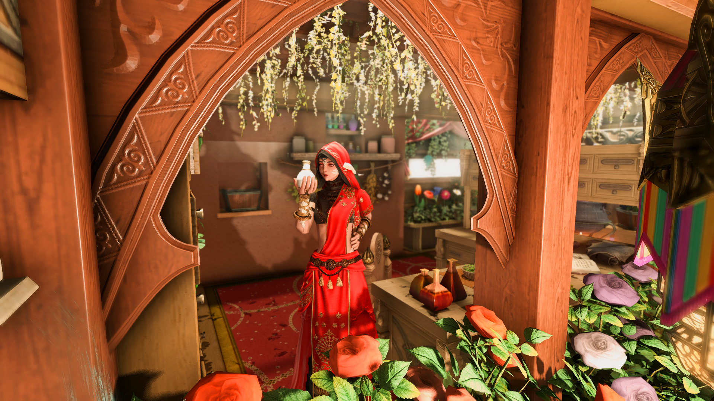

Contenants durables
Principe des pots et flacons réutilisables, possibilité de revenir avec son contenant, recharges et fonctionnement des accessoires lavables.
Une maison de parfums et de soins artisanaux, pensée autour des plantes, des matières et de l’expérience sensorielle.
Un texte d’accueil pourra présenter ici Sadiya, son atelier, sa façon de concevoir les parfums et les soins, et l’esprit général de la boutique.
Cette zone est volontairement assez large pour accueillir une vraie présentation RP sans donner l’impression d’un pavé. On peut y évoquer les compositions artisanales, le travail des essences, la place du bain et des soins, et le fait que les créations de la maison ne sont pas pensées selon un genre.

Une section pensée comme la philosophie pratique de l’atelier plutôt qu’un règlement sec.
Principe des pots et flacons réutilisables, possibilité de revenir avec son contenant, recharges et fonctionnement des accessoires lavables.
Possibilité de prendre rendez-vous pour une conception personnalisée : parfum, soin ou préparation adaptée à un besoin particulier.
Les produits ne sont pas genrés. Ils sont pensés selon une intention, une matière, un usage ou une sensation recherchée.
Cette première version conserve des cartes simples : on pourra ensuite y intégrer les illustrations définitives, les fiches détaillées et les prix RP.

Floral · aqueux · poudré · boisé
Nymphéa, hibiscus
Violette, nymphéa, cosmos
Santal, violette, cosmos
Frais et délicatement aqueux à ses premières notes, Jardin Suspendu laisse peu à peu s’épanouir un bouquet tendre et poudré, réchauffé sur la peau par la douceur crémeuse du santal. L’hibiscus s’y glisse avec discrétion, comme un fil invisible entre les fleurs, tandis que le bois prolonge leur présence dans un sillage doux et enveloppant. Une fragrance florale intime, inspirée de ces jardins thavnairois où les fleurs se mêlent à l’eau, à l’ombre et à la chaleur.
L’utilisation de mods, de Snowcloak et/ou de Lightless est laissée à la liberté et à la discrétion de chacun. Merci de respecter tout autant les personnes jouant en vanilla ou sans ces outils.
Cette zone pourra accueillir les crédits complets des illustrations, captures, ressources et éventuels éléments graphiques utilisés sur le site.